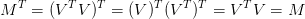
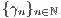
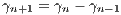

. Dada uma função
. Dada uma função
 , a ideia é aproximar sua derivada pela razão fundamental:
, a ideia é aproximar sua derivada pela razão fundamental:
O método das secantes é uma variação do método de Newton, evitando a
necessidade de conhecer-se a derivada analítica de . Dada uma função
, a ideia é aproximar sua derivada pela razão fundamental:
 |
Mais precisamente, o método de Newton é uma iteração de ponto fixo da forma:
 |
onde  é uma aproximação inicial dada e
é uma aproximação inicial dada e  . Usando a
aproximação da derivada acima, com
. Usando a
aproximação da derivada acima, com  e
e  , temos:
, temos:
 |
Isto nos motiva a introduzir a iteração do método das secantes dada por:
 |
Observe que para inicializarmos a iteração acima precisamos de duas
aproximações iniciais, a saber,  e
e  . Maneiras apropriadas de escolher
estas aproximações podem ser inferidas da interpretação geométrica do
método.
. Maneiras apropriadas de escolher
estas aproximações podem ser inferidas da interpretação geométrica do
método.
 e
e  , sabemos
que esta equação possui uma raiz em torno de
, sabemos
que esta equação possui uma raiz em torno de  . Iniciamos o método com
. Iniciamos o método com
 e
e  .
.
 |  |  |  |
 |  |
||
 |  |  |  |
 |  |  |  |
 |  |  |  |
 |  |  |  |

Enquanto, o método de Newton está relacionado às retas tangentes ao gráfico da
função objetivo  , o método das secantes, como o próprio nome indica, está
relacionado às retas secantes.
, o método das secantes, como o próprio nome indica, está
relacionado às retas secantes.
Sejam  e as aproximações
e as aproximações  e
e  do zero
do zero  desta função (veja
Figura 3.6). A iteração do método das secantes fornece:
desta função (veja
Figura 3.6). A iteração do método das secantes fornece:
 |
De fato,  é o ponto de interseção da reta secante ao gráfico de
é o ponto de interseção da reta secante ao gráfico de  pelos
pontos
pelos
pontos  e
e  com o eixo das abscissas. Com efeito, a equação desta reta
secante é:
com o eixo das abscissas. Com efeito, a equação desta reta
secante é:
 |
Esta reta intercepta o eixo das abscissas no ponto  tal que
tal que  ,
i.e.:
,
i.e.:
 |
Uma análise assintótica semelhante aquela feita para o método de Newton nos
indica que, para uma função  duas vezes diferenciável, as iterações do
método da secante satisfazem:
duas vezes diferenciável, as iterações do
método da secante satisfazem:
 |
para aproximações iniciais suficientemente próximas de  , onde
, onde  .
Além disso, veremos que:
.
Além disso, veremos que:
 |
sob certas condições. Ou seja, o método das secantes tem taxa de convergência superlinear.
Teorema 3.5.1 (Método das secantes). Seja ![f ∈ C2 ([a,b])](main1638x.png) uma função com
uma função com
 tal que
tal que  . Sejam, também:
. Sejam, também:
![m := min |f ′(x)| > 0 e M := max |f ′′(x)| < ∞.
x∈[a,b] x∈ [a,b]](main1641x.png) |
Além disso, seja  tal que:
tal que:
![M
q := ---ρ < 1, K ρ(x∗) := {x ∈ ℝ; |x − x∗| ≤ ρ} ⊂ [a,b].
2m](main1643x.png) |
Então, para aproximações iniciais  , com
, com  , temos
que as iterações do método das secantes
, temos
que as iterações do método das secantes  ,
,  , e
, e  ,
quando
,
quando  . Além disso, vale a seguinte estimativa de convergência a
priori:
. Além disso, vale a seguinte estimativa de convergência a
priori:
 |
onde  é a sequência de
Fibonacci6 7 ,
bem como vale a estimativa a posteriori:
é a sequência de
Fibonacci6 7 ,
bem como vale a estimativa a posteriori:
 |
 ,
,  , e
, e  , tal que
, tal que
 ,
,  e
e  . Seja, também:
. Seja, também:
 |
Com isso, temos:

 e do Teorema do valor
médio, temos:
e do Teorema do valor
médio, temos:
 | (3.5) |
Agora, iremos estimar este último termo a direita. Para tanto, começamos
observando que da expansão em polinômio de Taylor de ordem  da função
da função
 com resto na forma integral, temos:
com resto na forma integral, temos:

 |
Logo, temos:
![f-(x(n))-−-f(x(n−1)) f(x(n)) −-f-(x∗)
x(n) − x(n−1) − x(n) − x ∗ =
∫ 1[ ]
f′(x (n) + r(x(n−1) − x (n))) − f ′(x(n) + r(x ∗ − x (n))) dr.
0](main1671x.png) | (3.6) |
Agora, novamente temos:
 |
Então, retornando à Equação (3.6) e usando a assumida cota para a segunda derivada, obtemos:
 |
Agora, retornando à Equação (3.5), obtemos:
 |
Portanto, concluímos que as iterações do método da secantes  permanecem
no conjunto
permanecem
no conjunto  , se começarem nele. Além disso, temos demonstrado
que:
, se começarem nele. Além disso, temos demonstrado
que:
 |
Com isso, temos:
 |
Como  e
e  , temos
, temos  ,
,  . Isto mostra a estimativa de
convergência a priori:
. Isto mostra a estimativa de
convergência a priori:
 |
Além disso, como  quando
quando  e
e  , temos que as iterações do
método das secantes
, temos que as iterações do
método das secantes  quando
quando  .
.
Por fim, mostramos a estimativa de convergência a posteriori. Para tanto, da
cota assumida para a primeira derivada e do Teorema do valor médio, temos, para
 :
:

 |
temos:
 |
Logo:
 |
Observamos que o último termo pode ser estimado como feito acima para o termo análogo na Inequação (3.5). Com isso, obtemos a estimativa desejada:
 |

 é definida por
é definida por
 e
e  ,
,  . Logo, satisfaz a seguinte equação de
diferenças:
. Logo, satisfaz a seguinte equação de
diferenças:
 |
Tomando ,  temos:
|
|
Portanto, . Como  , as constantes satisfazem:
, as constantes satisfazem:
 |
Ou seja, obtemos a seguinte forma explícita para os números de Fibonacci:
 |
Daí, segue imediatamente o enunciado.

 .
.


 ).
).